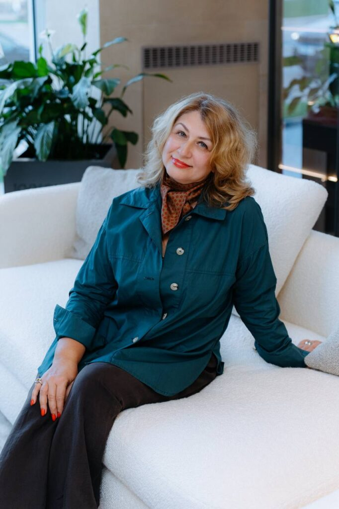

Керамическая плитка: тренды глазами дизайнера интерьеров
Светлана Ильина — дизайнер интерьеров, входящая в ТОП-50 российских дизайнеров по версии Archiprofi. Студия реализует проекты полного цикла — от эксклюзивных интерьеров загородных резиденций до декорирования отдельных пространств, создавая для каждого объекта индивидуальную авторскую концепцию. Работы Светланы отмечены международными премиями International Property Awards 2017–2018 и Interia Awards 2016, публикуются в ведущих интерьерных изданиях, а экспертные материалы о дизайне и современных тенденциях регулярно выходят на профильных площадках.
Керамика — первый в истории человечества рукотворный материал. Именно из глины, благодаря мастерству человеческих рук и силе огня, появились посуда, предметы интерьера и строительная керамика — материал, из которого выросли первые города и архитектурные цивилизации. И это не случайно, потому что керамика олицетворяет сразу несколько глобальных трендов, которые очень чётко прослеживались на Миланской неделе дизайна. Выставка Salone del Mobile.Milano 2026 стала ярким подтверждением этого.
Специально для ТОПДИЗАЙНМАГ дизайнер интерьеров Светлана Ильина посетила выставку в Милане и подготовила обзор самых ярких тенденций в мире керамической плитки — материала, который сегодня выходит далеко за рамки отделки и становится важным инструментом архитектурной выразительности и создания современных интерьеров.

Фото А Neri&Hu для Mutina Editions коллекция посуды HéПервое – это связь с историей: в этом году особенно много внимания было уделено именно истории дизайна, архивным моделям и традиционным материалам. Эта тенденция – возвращение к истокам. В эпоху виртуальной реальности людям необходимо чувствовать опору, и этой опорой является что-то настоящее, что-то испытанное временем. И керамика полностью отвечает этому запросу.
Следующий тренд, который ярко прослеживается -это рукотворство и ремесленничество. Серийное производство, одинаковые вещи, массмаркет уже не интересен в интерьере. Актуальны неповторимая предметы, эксклюзивные, непохожие на другие – именно этот результат дают керамические изделия.
И очень ярко прослеживался тренд на восточную эстетику, а именно, на ЮВ Азию – Япония, Китай, Индонезия. Влияние востока было заметно и в мебели, и в светильниках и отделочных материалах, и конечно же в керамике.
Для создания своих коллекций бренд всегда приглашает самых сильных дизайнеров и в этот раз они пригласили китайское бюро Neri&Hu. Это очень известные дизайнеры из Шанхая, которые переосмысливают исторические китайские элементы в современных формах. Они создали коллекцию Weaving, вдохновившись древним китайским искусством плетения из бамбука.

Керамика на сетке состоит из модульных элементов различной формы, которые складываются в узоры традиционного китайского плетения. И, что характерно, несмотря на то, что это серийное производство, каждая плиточка выглядит по-разному – как будто она произведена вручную!
Это касается и формы и цвета – даже краска нанесена таким образом, как будто это всё сделано вручную. Именно такой эффект и является фишкой коллекции и глобальным трендом – люди устали от серийных одинаковых предметов и им хочется рукотворного несовершенства. Дизайнеры используют очень природные натуральные цвета – естественные оттенки бамбука, спокойные и очень восточные.
Кроме того, для линейки Mutina Editions, студия Neri&Hu разработала коллекцию посуды Hé. Полюбуйтесь совершенными и современными формами и цветами этих прекрасных ваз!
Коллекция вдохновлена древними китайскими ритуальными сосудами. Дизайнеры используют символы Земли и Неба из китайской космологии – Fāng (квадрат) и Yuán (круг) и сочетают керамику и твёрдое дерево. Она включает четыре предмета, каждый из которых доступен в двух цветовых вариантах — Dawn и Dusk.
Ещё одна новая коллекция от Mutina – это ода квадрату Homage to the Square, созданная в сотрудничестве с Фондом Йозеф и Анни Альберс. Производство этой коллекции сложное, потому что здесь совмещены глянцевые и матовые поверхности на одном изделии.

Так была представлена коллекция в шоуруме Милана, и, следует обратить внимание, что для презентации использованы арт объекты и мебель от культовых дизайнеров.
Глянцевый лак, блестящий лак – это тренд сезона. Он прослеживается и в корпусной мебели, которая покрывается чёрным глянцевом лаком (сразу вспоминаем Китай), и в сантехнике. Многие бренды представили на выставке именно глянцевые раковины, глянцевые столешницы, глянцевые унитазы и проч.
Журнальные столики из дерева и камня потеснили керамические столики, опять же, с глянцевой поверхностью.
Диваны Ardys для Cassina примечательны тем, что их обивка выполнена в современной технологичной ткани, напоминающей легкие спортивные материалы, а внутреннее наполнение – из пенополиуретана с содержанием переработанных материалов. Эти материалы позволили создать мягкие объемы, напоминающие стеганное одеяло. Глянцевые керамические столики создают тактильный и визуальный контраст с современной атласной обивкой и придают коллекции особый шарм.
Коллекция Ardys хороший пример сочетания инноваций и традиционного ремесленного мастерства и экологичного подхода к производству мебели.
Керамику можно увидеть даже в изголовье кровати – яркие цилиндры-бусины превращают кровать в арт объект!
Кровать Rosary сочетает бархатное изголовье с керамическими цилиндрами, которые изготовлены вручную в городе Нове – известном керамическом центре. Rosary означает в переводе «четки». Глянец керамики эффектно оттеняет роскошный бархат изголовья от Pierre Fray.
Смело можно сказать, что керамике в этом сезоне уделено особое место! Рукотворность предметов, неповторимость цветов, форм, поверхностей – это то, что будет актуально долгое время. Потребители устали от серийных одинаковых изделий. Керамика дает ощущение живого интерьера и наполняет пространство яркими цветами и теплотой рук. Она не выходит из моды, а становится только ценнее со временем, напоминая о ценности уникального и настоящего.